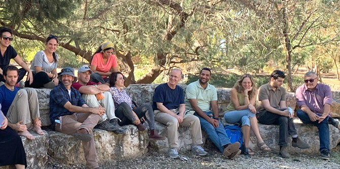

Recent years have seen a growing number of extreme weather events of increasing severity across the globe. These include catastrophic storms, widespread flooding, prolonged droughts, wildfires, and the melting of glaciers and retreat of the polar ice caps. These events are having a major social and economic impact, including desertification, the spread of disease, food crises, and large-scale migration. The climate change assessment report issued by the Intergovernmental Panel on Climate Change (IPCC) issued in August 2021, based on thousands of recent climate studies, stresses that all citizens of the world, especially those who wish to lead processes of change that will improve life in society, must be aware of the climate situation and its repercussions for human society, and, not less important, to understand the significance of the narrow window of opportunity we have for changing course.
The decision of the Mandel School for Educational Leadership to bring the climate crisis and issues of sustainability into this year’s program, combined with the fact that several fellows of Cohort 29 chose to focus on this topic as part of their individual program of studies, led to the creation of a study tour on the climate crisis. The process of designing the trip was led jointly by faculty member
Dr. Lia Ettinger and longstanding tutor
Vered Livne.

The main purpose of the two-day study tour, held in November 2021, was to bring the fellows face-to-face with the seriousness of the climate crisis and with various dilemmas related to how to address it. Through visits to power plants, waste handling facilities, and agricultural centers and initiatives, the fellows learned about possible solutions to challenges, and about the social, economic, political, ethical, and educational questions presented by the climate crisis. The trip also sought to develop the fellows’ conceptual understanding of the connection between these issues and the worthy individual and society.
As part of their study tour, the fellows explored the implications of pursuing a “zero carbon” policy in Israel by the year 2050. Among other sites, the fellows visited the Orot Rabin power plant in Hadera and the Ma’ale Gilboa renewable energy wind farm. There they learned about methods of producing electricity from fossil fuels and from renewable energies, and, more importantly, about the challenges involved in transitioning from the former to the latter. They also toured the Veridis waste sorting facility in Afula, where they learned about the connection between waste and the climate crisis. In Moshav Hayogev, they met with farmers and entrepreneurs who are advancing various kinds of sustainable agriculture. Over the two days of the field trip, and during a concluding session, the fellows participated in discussion sessions during which they analyzed, processed, and shared thoughts about the climate process and its impact, and about its implications for them as educational leaders.
One of the most significant outcomes of this process was the realization that it is vital to include a required course on the climate crisis in the School’s curriculum, preceded by the aforementioned study tour. This insight is based on the clear understanding that the climate crisis is one of the main challenges we will all have to address, now and in the foreseeable future.
Study tours are held twice a year as part of the program of study at the Mandel School for Educational Leadership, in the fall and in the spring, and they examine changing themes. The trips introduce fellows to educational and social leaders and their work, and enable fellows to improve their powers of observation and conceptualization skills. The trips also serve as an extension of the curriculum, broadening and deepening the fellows’ knowledge in key areas.
The study tours are designed and implemented in collaboration with a team of fellows who volunteer for the task. They study the chosen subject for the trip and learn about the methodology of planning field trips and study tours. In addition to introducing the fellows to new content, the field trips enable fellows to step away from their familiar fields of activity and the regular study setting. They expose the fellows to informal arenas, and provide the fellows of both cohorts, as well as the program’s faculty and staff, with important shared experiences. The study tours thus build relationships and contribute to the overall atmosphere of the program.

{kind=link}
{kind=link}